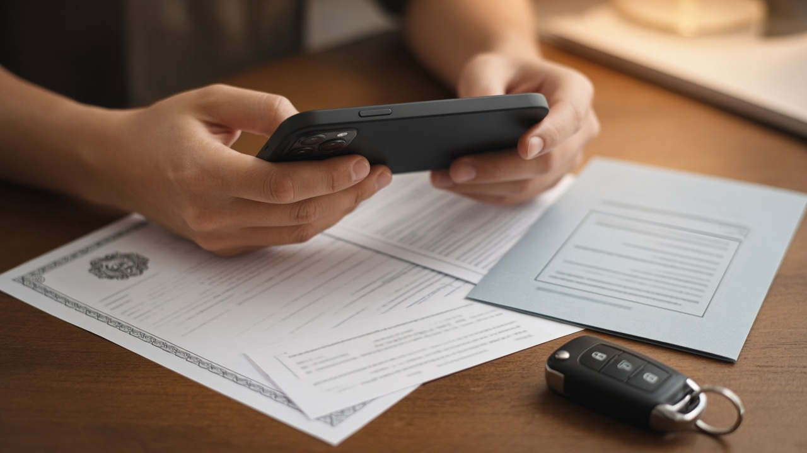
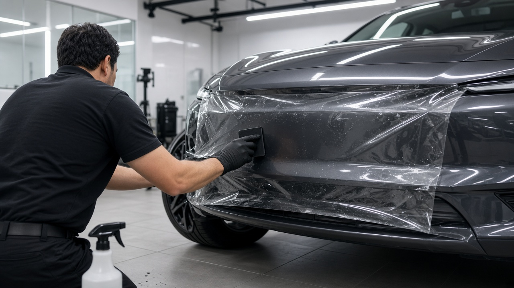

PPF 붙인 차가 사고 나면 필름값은 누가 낼까, 자차보험 증권 기재 여부와 제조사 보증에서 빠지는 공임비

신차를 뽑고 큰마음 먹고 PPF를 시공했는데, 몇 달 만에 접촉사고가 나면 머릿속이 복잡해지죠. 범퍼 수리는 보험으로 한다 쳐도, 그 위에 붙어 있던 필름 재시공비까지 받을 수 있는지, 필름 회사 보증으로 처리되는지 헷갈리는 분이 많아요. 오늘은 자동차보험 표준약관과 필름 제조사 보증 조건을 바탕으로, 사고 상황별로 필름 비용이 어디서 나오고 어디서 빠지는지 차근차근 정리해 볼게요.
PPF가 무엇이고 보험과 보증을 따로 봐야 하는 이유
PPF는 도장면 위에 붙이는 투명한 우레탄 보호 필름이에요. 돌빵이나 생활 흠집을 막아 주는 대신 부분 시공만 해도 수십만 원, 전체 시공은 수백만 원이 들 만큼 비싼 편이죠.
문제는 이 필름이 출고 때부터 달려 나온 부품이 아니라, 나중에 따로 붙인 물건이라는 점이에요. 그래서 사고가 났을 때 필름 비용은 자동차보험이 볼 수도 있고, 필름 제조사의 보증이 볼 수도 있고, 둘 다 안 볼 수도 있어요. 어느 쪽으로 처리되는지는 누구 과실인지, 내 보험 증권에 무엇이 적혀 있는지, 필름 손상 원인이 무엇인지에 따라 갈려요. 이 세 가지를 순서대로 보면 정리가 쉬워져요.

상대방 과실 사고라면 상대 대물배상으로 청구하는 흐름
뒤에서 들이받힌 사고처럼 상대방 과실이 큰 경우에는 상대 차 보험의 대물배상으로 처리하는 게 기본이에요. 대물배상은 사고로 남의 재물을 망가뜨려 법률상 배상책임을 질 때 보상하는 담보라서, 내 차에 실제로 생긴 손해를 과실 비율만큼 물어 주는 구조예요.
그래서 사고 전에 필름이 붙어 있었다는 사실을 보여 줄 수 있다면, 재시공비도 내 차의 손해로 함께 청구해 볼 수 있어요. 시공점 쪽 안내를 보면 시공 보증서나 영수증, 필름이 붙어 있던 사고 전후 사진이 있으면 처리가 수월하다고 해요.
다만 쌍방 과실이면 상대 과실만큼만 나와요. 예를 들어 내 과실이 20이고 상대가 80이면 재시공 견적의 80만큼만 상대 대물배상에서 받고, 나머지는 내 자차보험이나 자비로 채워야 해요. 접수할 때 도장 손상만 말하지 말고 필름 손상도 처음부터 함께 알려 두는 게 좋아요.
내 과실이나 단독 사고라면 자차보험 약관부터 확인
내가 기둥을 긁었거나 과실이 더 큰 사고라면 내 자기차량손해, 흔히 자차로 처리하게 되는데 여기서 많이 놀라세요. 손해보험협회 자동차보험 종합포털에 올라와 있는 표준약관을 보면, 자차는 피보험자동차에 통상 붙어 있거나 장치되어 있는 부속품은 차의 일부로 보지만, 통상 붙어 있는 것이 아닌 것은 보험증권에 기재한 것에 한해 보상한다고 적혀 있어요.
같은 약관에서 부속품은 볼트나 너트로 고정돼 공구 없이는 떼기 어렵거나 자동차 기능을 위해 갖춰 둔 물품을 말하고, 통상 장식품으로 보는 물건은 부속품에서 빠진다고 정의하고 있어요. 나중에 붙인 필름이 이 기준에서 어떻게 판단되는지는 보험사마다 해석과 상품 구성이 다를 수 있어요.
결국 핵심은 내 증권이에요. 시공 내역이 추가 부속품으로 기재돼 있는지, 관련 특약이 있는지 보험사 앱이나 고객센터에서 확인해 보시고, 없다면 갱신 때 시공 영수증을 내고 등록이 되는지 물어보세요. 등록이 안 된 상태라면 도장 수리비는 나와도 필름 재시공비는 자비가 될 수 있어요. 또 소액 손상을 자차로 처리하면 자기부담금과 다음 해 할증까지 붙으니 자비 수리와 금액을 비교해 보는 게 좋아요.

제조사 보증이 덮어 주는 것과 빠지는 것
필름 제조사 보증은 사고 보상이 아니에요. 예를 들어 엑스펠 코리아가 공개한 보증 안내를 보면, 보증은 필름 자체의 제조 결함으로 생긴 들뜸, 기포, 투명도 저하를 대상으로 하고, 사고나 외부 충격에 의한 손상, 비공인 시공점의 잘못된 시공, 관리 소홀, 도장 자체 문제로 인한 변형, 자연재해는 보증 대상이 아니라고 밝히고 있어요.
보증 대상으로 인정돼도 교체 필름만 무상이고, 기존 필름 제거와 재시공 공임비는 차주 부담이라고 안내돼 있어요. 또 보증은 처음 시공할 때 등록된 소유자에게만 적용되고, 차를 팔아 명의가 바뀌면 새 주인에게 넘어가지 않는다고 해요. 중고차로 PPF 붙은 차를 사는 분이라면 이 부분도 알아 두시면 좋겠어요.
보증 기간과 조건은 브랜드와 제품 등급마다 다르니, 시공 전에 받는 보증서에 기간과 제외 항목이 어떻게 적혀 있는지 꼭 읽어 보세요.
시공 직후 챙겨 둘 서류와 사고가 났을 때 순서
시공을 마치면 보증서와 결제 영수증, 시공 부위가 적힌 견적서를 사진으로 찍어 휴대폰에 따로 보관해 두세요. 견적서에는 필름 브랜드와 제품명, 부위별 금액이 나눠 적혀 있어야 나중에 손해액을 설명하기 쉬워요. 제조사 누리집에서 차량 번호로 보증 등록이 됐는지 조회해 두는 것도 좋아요.
사고가 나면 먼저 손상 부위를 멀리서 한 장, 가까이서 여러 장 찍어 필름이 찢어진 모습이 보이게 남기세요. 그다음 보험 접수 때 필름 손상이 있다는 걸 함께 말하고, 시공점에서 재시공 견적서를 받아 보험사에 전달하면 돼요. 과실 비율이 애매하면 손해보험협회 과실비율정보포털에서 비슷한 사고 유형의 기준을 미리 찾아보는 것도 도움이 돼요.
오늘 내용은 10월 28일 기준 자동차보험 표준약관과 필름 제조사 공개 보증 안내를 바탕으로 정리한 일반 정보예요. 실제 보상 범위는 가입한 보험사 약관과 증권 내용에 따라 달라지니 꼭 해당 보험사에 확인하세요.
참고 자료 손해보험협회 자동차보험 종합포털 자동차보험 표준약관, 엑스펠 코리아 PPF 보증 가이드, 손해보험협회 과실비율정보포털
태그 PPF 자동차보호필름 PPF보험처리 자차보험 대물배상 자동차보험약관 추가부속품 PPF보증 신차관리 접촉사고